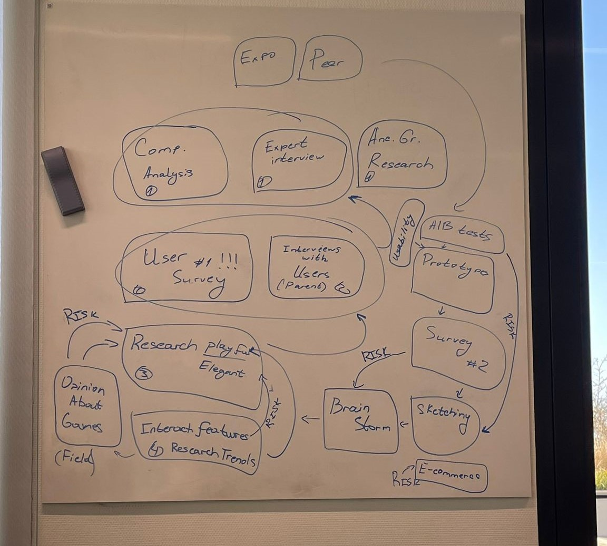

About project

Working on a project for a client involves collaborating with a client to identify their needs and deliver a product or service that meets those needs. This can include developing a website, creating a branding strategy, designing a product, or providing a range of other services.
The key to successful project delivery is effective communication and collaboration with the client. This involves understanding the client's goals, gathering requirements, and delivering regular updates and progress reports. It's important to work closely with the client to ensure that their needs are met and that the project is delivered on time and within budget.
Overall, working on a project for a client requires strong communication, collaboration, and adaptability skills. By working closely with the client and delivering high-quality results, you can establish a strong reputation as a trusted partner and deliver successful projects that meet your client's needs.
Week 1
Working on Main question and Sub questions

Week 2
Short planning
-

Week 3
Preparation for questions for client

Week 4
Clien meeting